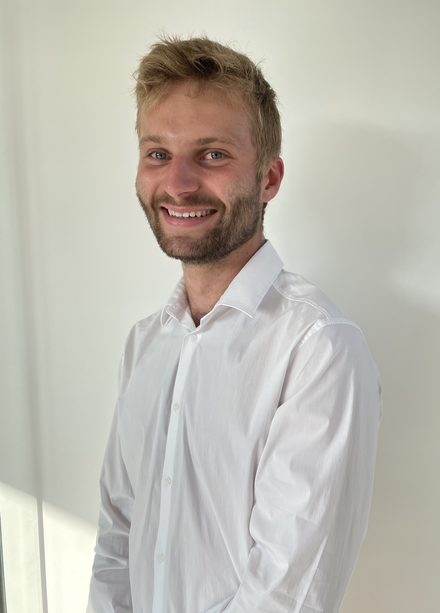

Passionné par la conception durable et l'optimisation énergétique, je mets mon expertise au service de vos projets architecturaux et immobiliers. Avec une solide formation d'ingénieur civil architecte, j'allie la rigueur technique à la vision esthétique pour concevoir des espaces de vie à la fois performants et harmonieux.
Fort de plusieurs années d'expérience dans la réalisation de certificats PEB, d'expertises immobilières et de projets sur mesure, je vous accompagne avec professionnalisme à chaque étape de votre démarche. Mon objectif est de vous apporter des solutions concrètes et innovantes adaptées à vos besoins spécifiques.
Me contacter